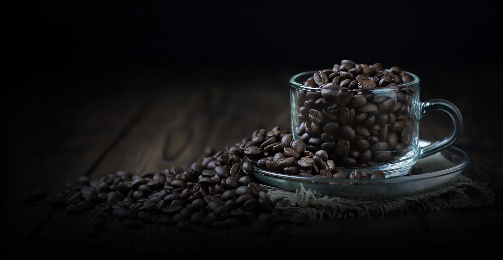
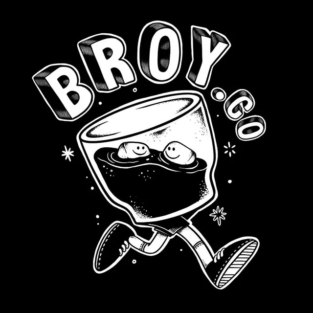
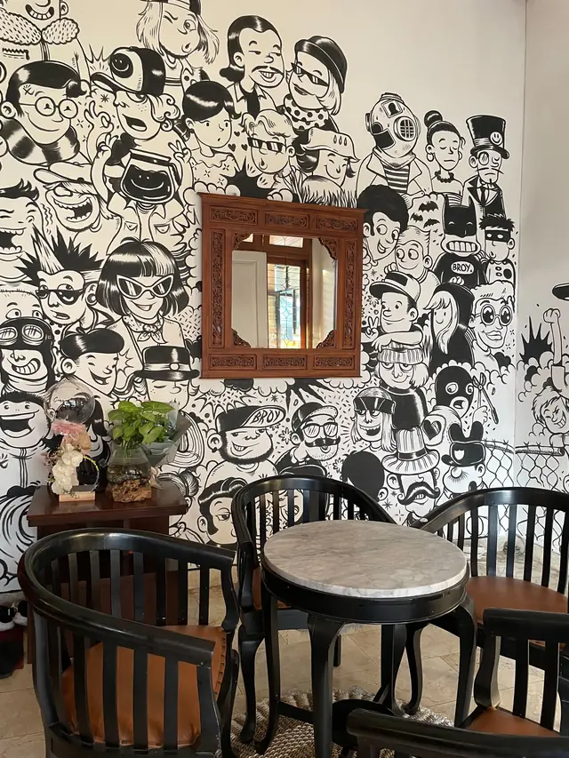
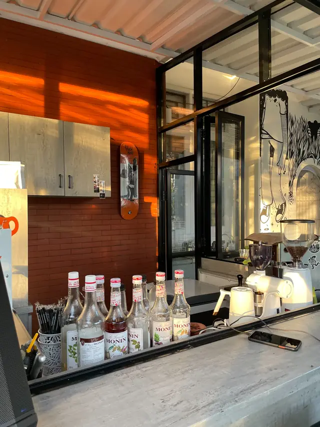
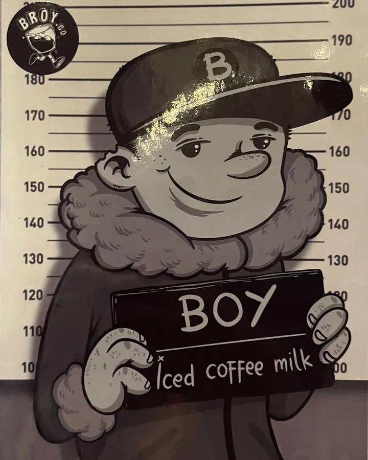
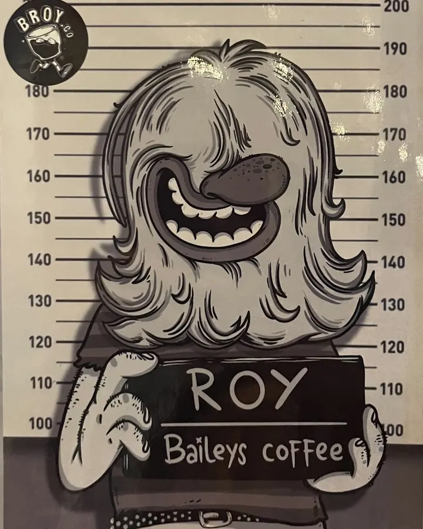
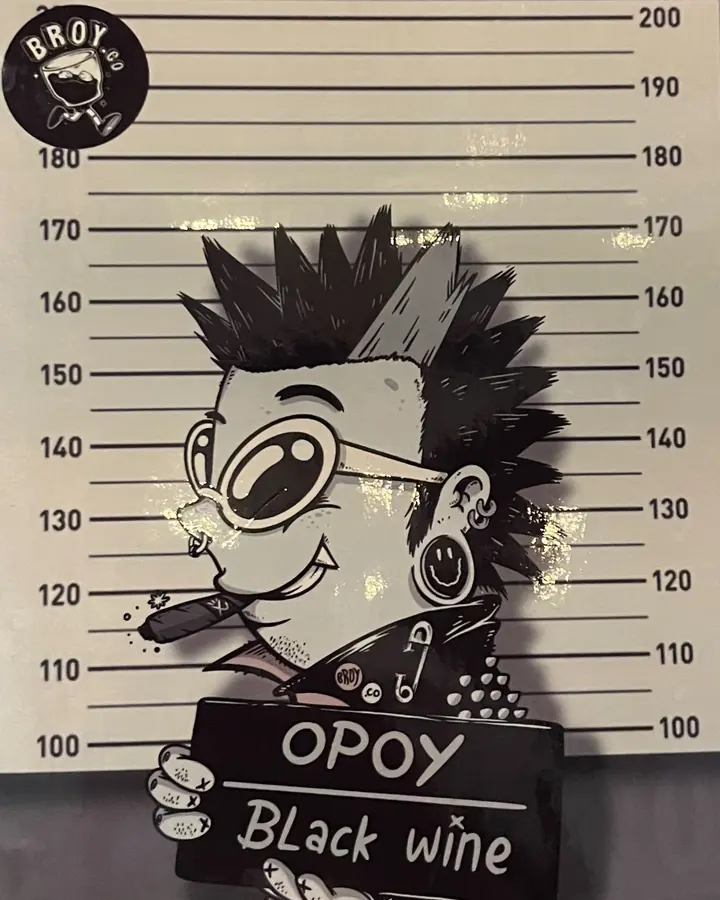
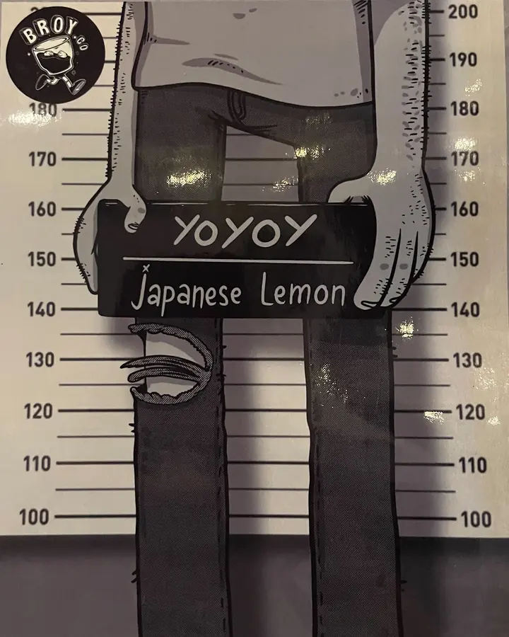
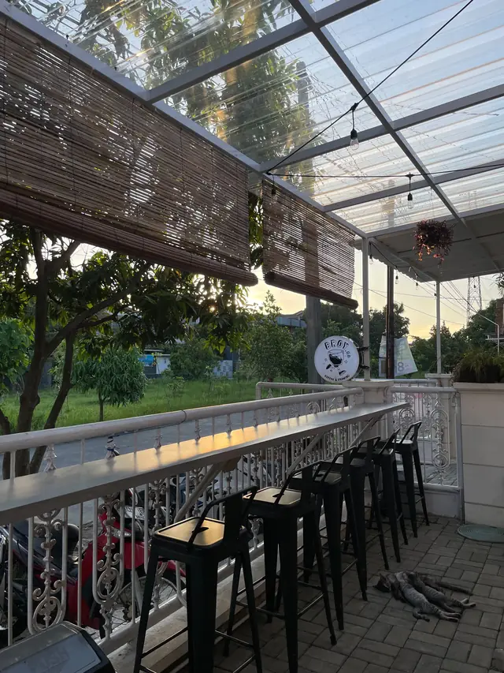

Where coffee meets imagination
Ngopi dulu, nyoret kemudian.
Broy.Co adalah kedai kopi & ruang gambar di Arcamanik, Bandung. Segelas kopi dingin, dinding mural hitam-putih, dan kursi yang bikin betah berlama-lama.
- Mulai Rp20 ribu
- Buka 04.00–11.00
- Arcamanik, Bandung



Cerita kami
Kedai kecil, kopinya serius, coretannya santai.
Di Broy.Co, kopi dan gambar jalan bareng. Dindingnya penuh mural hitam-putih karakter-karakter nyeleneh, bar kopinya terbuka supaya kamu bisa lihat minumanmu dibuat, dan terasnya berlampu gantung dengan bangku bar yang pas buat ngobrol.
Kamu tidak perlu jadi seniman atau barista untuk betah di sini. Datang, pesan satu gelas, bawa buku sketsa (atau cuma ponsel), lalu biarkan obrolan mengalir sendiri.
-
Kopi
Menu singkat yang dijaga rasanya, dari kopi susu dingin sampai racikan beraroma Baileys.
-
Gambar
Boy, Roy, Opoy, dan Yoyoy menjadi wajah tiap minuman andalan kami.
-
Ruang
Teras bar, sudut meja marmer, dan bar kopi terbuka. Pilih spot sesukamu.
Meet the gang
Empat karakter, empat gelas andalan
Setiap minuman signature punya wajahnya sendiri, lengkap dengan poster “buronan” khas Broy.Co. Pilih yang paling cocok dengan mood-mu.
-

Harga Rp 23.000Boy
Iced coffee milk
Si paling santai. Kopi susu dingin yang ramah di lidah siapa saja.
-

Harga Rp 24.000Roy
Baileys coffee
Si gondrong yang gampang tertawa. Kopi dengan sentuhan rasa Baileys untuk yang suka sedikit beda.
-

Harga Rp 25.000Opoy
Black wine
Si anak punk berkacamata bulat. Pilihan paling gelap dan berani di daftar kami.
-

Harga Rp 20.000Yoyoy
Japanese lemon
Si jangkung berjeans sobek. Segar dan asam-manis, penyeimbang kalau kopi terasa terlalu berat.
Harga dapat berubah sewaktu-waktu. Mau tanya menu lengkap? Tanya lewat WhatsApp.
Suasana
Tempat yang enak buat berlama-lama
Intip sudut-sudut Broy.Co sebelum kamu mampir.

Sering ditanyakan
Sebelum kamu mampir
Di mana lokasi Broy.Co?
Jl. Layar No.10, Cisaranten Endah, Kec. Arcamanik, Kota Bandung, Jawa Barat. Buka petanya lewat bagian Kunjungi.
Jam berapa Broy.Co buka?
Kami buka pukul 04.00 sampai 11.00 WIB.
Berapa harga minuman signature?
Boy (iced coffee milk) Rp23.000, Roy (Baileys coffee) Rp24.000, Opoy (black wine) Rp25.000, dan Yoyoy (Japanese lemon) Rp20.000.
Bagaimana cara memesan?
Datang langsung ke kedai, atau hubungi kami lewat WhatsApp di +62 857 0302 7078 untuk menanyakan menu dan pesanan.
Apa maksud “Coffee & Drawing”?
Itu tagline kami: kopi dan gambar berjalan bersama. Kamu bisa merasakannya lewat mural hitam-putih di dinding, karakter minuman signature, dan ruang santai untuk berlama-lama.
Kunjungi kami
Mampir ke Arcamanik
- Alamat
- Jl. Layar No.10, Cisaranten Endah, Kec. Arcamanik, Kota Bandung, Jawa Barat
- Jam buka
- 04.00 – 11.00 WIB
- +62 857 0302 7078
- @broy.co